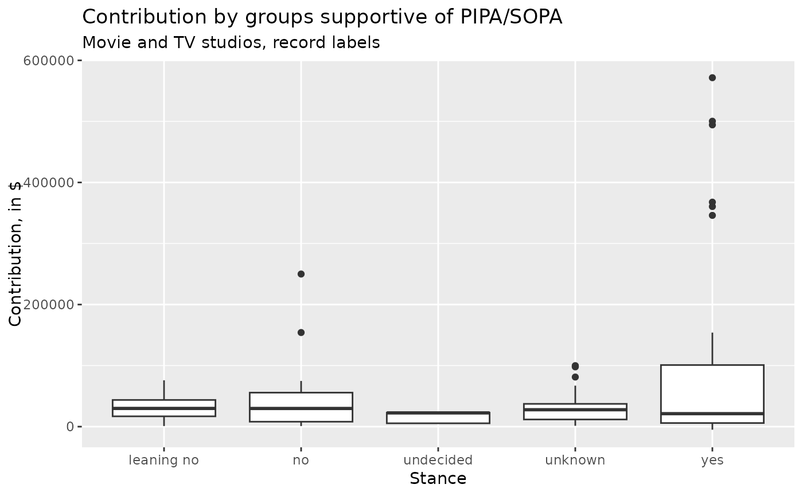
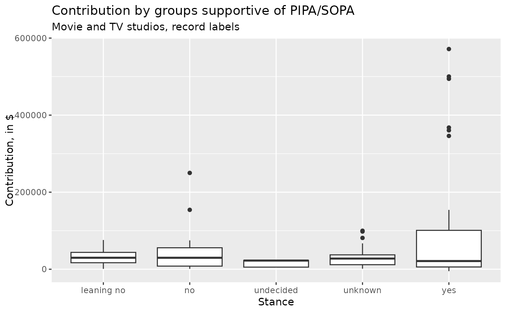

This data set contains observations on all 100 US Senators and 434 of the 325 US Congressional Representatives related to their support of anti-piracy legislation that was introduced at the end of 2011.
piracyFormat
A data frame with 534 observations on the following 8 variables.
- name
Name of legislator.
- party
Party affiliation as democrat (
D), Republican (R), or Independent (I).- state
Two letter state abbreviation.
- money_pro
Amount of money in dollars contributed to the legislator's campaign in 2010 by groups generally thought to be supportive of PIPA/SOPA: movie and TV studios, record labels.
- money_con
Amount of money in dollars contributed to the legislator's campaign in 2010 by groups generally thought to be opposed to PIPA/SOPA: computer and internet companies.
- years
Number of years of service in Congress.
- stance
Degree of support for PIPA/SOPA with levels
Leaning No,No,Undecided,Unknown,Yes- chamber
Whether the legislator is a member of either the
houseorsenate.
Source
https://projects.propublica.org/sopa The list may be slightly out of date since many politician's perspectives on the legislation were in flux at the time of data collection.
Details
The Stop Online Piracy Act (SOPA) and the Protect Intellectual Property Act (PIPA) were two bills introduced in the US House of Representatives and the US Senate, respectively, to curtail copyright infringement. The bill was controversial because there were concerns the bill limited free speech rights. ProPublica, the independent and non-profit news organization, compiled this data set to compare the stance of legislators towards the bills with the amount of campaign funds that they received from groups considered to be supportive of or in opposition to the legislation.
For more background on the legislation and the formulation of
money_pro and money_con, read the documentation on ProPublica,
linked below.
Examples
library(dplyr)
library(ggplot2)
pipa <- filter(piracy, chamber == "senate")
pipa %>%
group_by(stance) %>%
summarise(money_pro_mean = mean(money_pro, na.rm = TRUE)) %>%
ggplot(aes(x = stance, y = money_pro_mean)) +
geom_col() +
labs(x = "Stance", y = "Average contribution, in $",
title = "Average contribution to the legislator's campaign in 2010",
subtitle = "by groups supportive of PIPA/SOPA (movie and TV studios, record labels)")
 ggplot(pipa, aes(x = stance, y = money_pro)) +
geom_boxplot() +
labs(x = "Stance", y = "Contribution, in $",
title = "Contribution by groups supportive of PIPA/SOPA",
subtitle = "Movie and TV studios, record labels")
#> Warning: Removed 6 rows containing non-finite values (stat_boxplot).

ggplot(pipa, aes(x = stance, y = money_con)) +
geom_boxplot() +
labs(x = "Stance", y = "Contribution, in $",
title = "Contribution by groups opposed to PIPA/SOPA",
subtitle = "Computer and internet companies")
#> Warning: Removed 6 rows containing non-finite values (stat_boxplot).
ggplot(pipa, aes(x = stance, y = money_pro)) +
geom_boxplot() +
labs(x = "Stance", y = "Contribution, in $",
title = "Contribution by groups supportive of PIPA/SOPA",
subtitle = "Movie and TV studios, record labels")
#> Warning: Removed 6 rows containing non-finite values (stat_boxplot).

ggplot(pipa, aes(x = stance, y = money_con)) +
geom_boxplot() +
labs(x = "Stance", y = "Contribution, in $",
title = "Contribution by groups opposed to PIPA/SOPA",
subtitle = "Computer and internet companies")
#> Warning: Removed 6 rows containing non-finite values (stat_boxplot).
 pipa %>%
filter(
money_pro > 0,
money_con > 0
) %>%
mutate(for_pipa = ifelse(stance == "yes", "yes", "no")) %>%
ggplot(aes(x = money_pro, y = money_con, color = for_pipa)) +
geom_point() +
scale_color_manual(values = c("gray", "red")) +
scale_y_log10() +
scale_x_log10() +
labs(x = "Contribution by pro-PIPA groups",
y = "Contribution by anti-PIPA groups",
color = "For PIPA")
pipa %>%
filter(
money_pro > 0,
money_con > 0
) %>%
mutate(for_pipa = ifelse(stance == "yes", "yes", "no")) %>%
ggplot(aes(x = money_pro, y = money_con, color = for_pipa)) +
geom_point() +
scale_color_manual(values = c("gray", "red")) +
scale_y_log10() +
scale_x_log10() +
labs(x = "Contribution by pro-PIPA groups",
y = "Contribution by anti-PIPA groups",
color = "For PIPA")